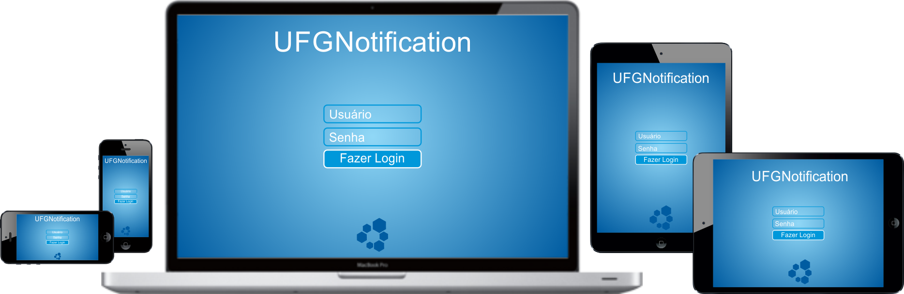
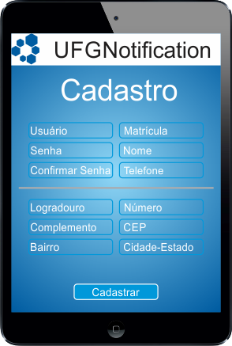

UFG NotificationNotificações destinadas a Estudantes e Funcionários da UFG
Designer Responsive



O aplicativo permite que seja realizado o cadastro de todos os membros da UFG através da especificação de usuário, senha, matrícula, nome e telefone. Também é necessário o preenchimento te todo o endereço.
Na tela inicial, encontra-se no menu a esquerda o seu nome, foto e outros links para alteração de dados e amigos para que seja marcado um evento e também um calendário para que seja cadastrado cada evento.
O aplicativo permite que ao clicar em uma determinada data, seja aberto uma janela para edição de um evento. Este com espaço para uma descrição, para que seja expecificado um titulo e um local por exemplo.
Também será possível que seja exibido todos os eventos em lista, assim é possível que seja visualizado todos os eventos ativos.